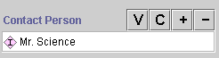
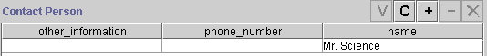

The InstanceRowWidget is an optional widget for slots of type Instance with single cardinality (at most equal to 1). The default widget, InstanceFieldWidget, shows the name of the Instance that is selected as the value of the slot. The InstanceRowWidget actually shows the slot values for the widget.
|
InstanceFieldWidget |
InstanceRowWidget |
|  |  |
To make an InstanceRowWidget, first select the widget you want to change, then select InstanceRowWidget from the Widget Type Menu.
When you select InstanceRowWidget from the Widget Type Menu, you will usually have to resize the widget.
In addition, you might not wish to use all the slots, and you might want to change the order in which they appear. You can make these changes using the Form Configuration dialog box. Note that the current implementation does not allow you to change the order directly by dragging, but you can reorder the slots by first removing them from the widget, and then adding them back in the order in which you wish them to appear.
To add or remove slots, change their order, or change the name under which they are displayed:
Next: InstanceTableWidget